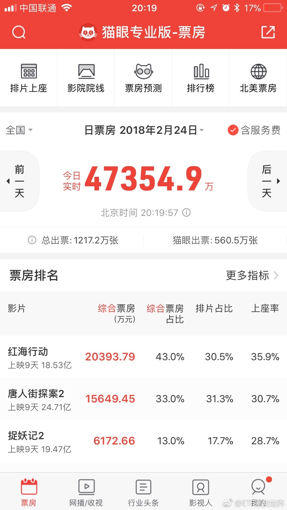

红海 唐人街 捉妖同日上映。第一天无论票房还是排片，红海都远远落后，甚至比不上女儿国。再看今天。红海已经连续第二天逆袭拿到单日冠军。这完全是口碑的逆袭。好东西就是好东西，人民是有分辨能力的。好不好，时间会给出答案。 
回复@ETF未来式:我给战狼二的打分。 评论配图 //@ETF未来式:和战狼2相比哪个更好哟@ETF拯救世界:每日打卡（160）今天看了红海行动，很燃，这几年我唯一给五星的国产片。激发男性荷尔蒙。以后每天要加一组运动了。如果你也喜欢，可以再去看看疯狂的麦克斯，MAD MAX 4，同样很燃。
老百姓还是不富裕，毕竟发展中国家。东京人均收入是30万人民币。美国是五万多美元。然而房价差的不多了@网易财经:#网易财经# 【2017年谁挣钱最多？京沪人均可支配收入逼近6万元】国家统计局近日公布了31个省份2017年居民人均可支配收入。数据显示，10省份人均可支配收入超过全国水平。上海、北京2017年居民人均可支配收入逼近6万元大关，上海以58987.96元位居全国首位。 2017年谁挣钱最多？京沪人均可支配收入逼近6万元 @网易新闻客户端 #网易新闻#